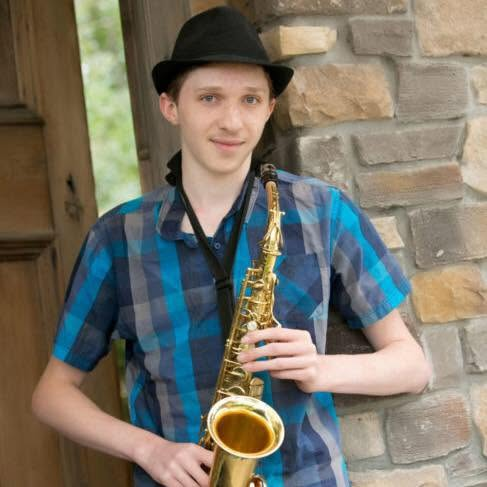
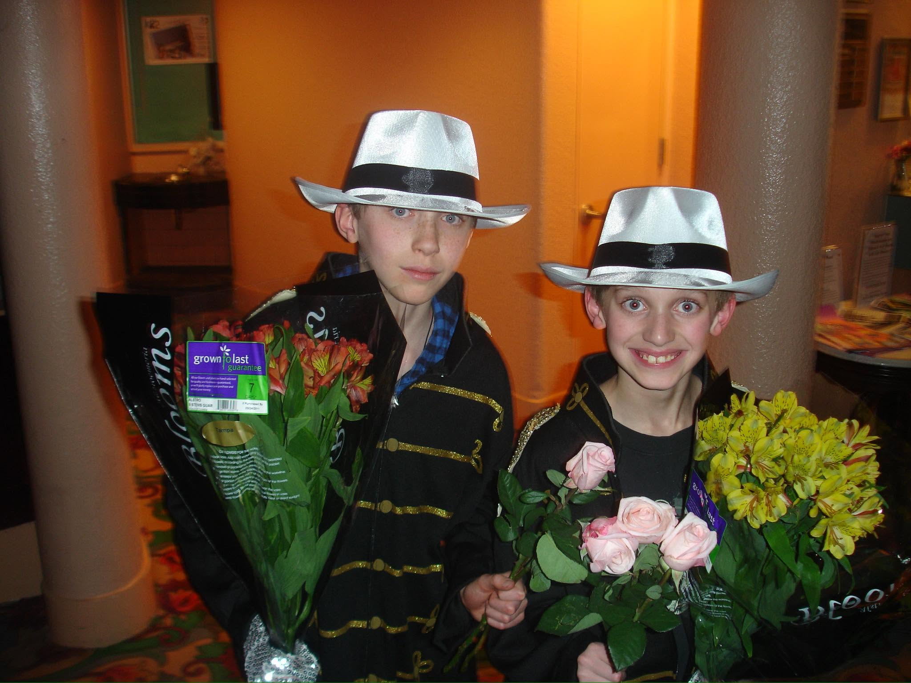
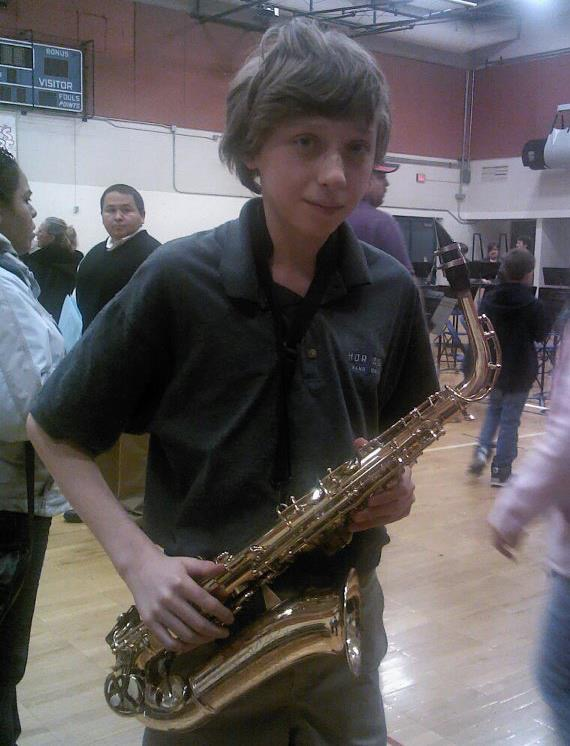

If there's anything that is most central to me and my life, it's my history with music & performance. Going as far back as my elementary years, I had a particular interest in performing music, especially once I discovered Michael Jackson and his music. I even did a couple performances alongside my brother, some of them becoming quite popular performances in our school!

Once I reached middle school, I decided it was time to learn how to play an instrument. I gravitated towards the alto saxophone, and after a little bit of time, I was able to learn fairly quick. That combined with natural musical instinct, I became considerably advanced compared to a lot of other students. I performed with our symphonic band and jazz ensemble, and even won some in-school awards for my skills. (I also wore a fedora a lot because I thought it looked cool, so I became pretty well known for that)

By the time I reached high school, I was already pretty dedicated to my saxophone skills, and intended on growing them further. Not only did I once again join my schools symphonic band and jazz ensemble, but I also joined their marching band, and immediately found a lot of fun with it and connected more with the community, all the while getting a good workout!